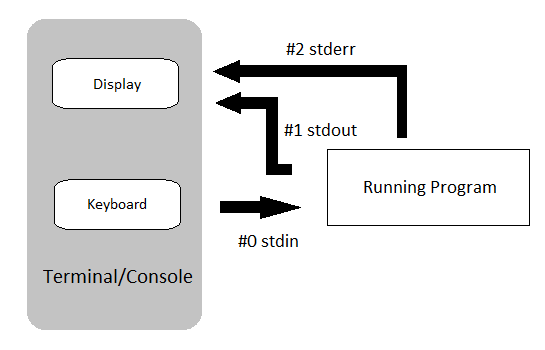

This is part of the #LinuxUpSkillChallenge. Don't forget to also check out the Official Instructions and the Reddit posts.
There are three standard streams that are established when a Linux command is executed:
STDIN: the standard input stream. File descriptor is 0.
STDOUT: the standard output stream. File descriptor is 1.
STDERR: the standard error stream. File descriptor is 2.

echo: outputs the strings it is being passed as arguments.
cat: reads files sequentially, writing them to standard output.
tac: same as cat but prints files in reverse.
head: display the beginning of a text file or piped data.
tail: display the tail end of a text file or piped data.
sort: prints the lines of its input in sorted order.
uniq: outputs the text with adjacent identical lines collapsed to one, unique line of text.
wc: reads standard input and generates a count of lines, words and/or bytes.
cut: extract sections from each line of input.
grep: reads data sets and searches for lines that match an expression. See Professor Brian Kernighan explain where GREP came from.
sed: parses and transforms text.
awk: scans the input file for lines that match any of a set of patterns specified.
3.1. List operators
; : will run one command after another has finished, irrespective of the outcome of the first.
&: “ampersand” runs the command in background.
3.2. Redirection operators
> : directs the output of a command into a file.
>>: does the same as >, except that if the target file exists, the new data are appended.
<: gives input to a command.
3.3. Pipe operator
See Professor Brian Kernighan explain how pipelines work.
|: “pipe” redirects the output of the previous command as the input of the next.
3.4. Logical operators
||: “double pipe” is the equivalent of a logical OR.
&&: “double ampersand” is the equivalent of a logical AND.
Regular expressions (Regex) are special characters which help search data, matching complex patterns. See more at this article.
^: matches the beginning of the line.
$: matches the end of the line.
^$: blank lines.
?: matches character one time, optional.
+: matches character at least one time.
.: matches any character, except \n.
*: matches character, zero or more times.
.*: matches any character, zero or more times.
[]: list (represents only one character).
{}: range
grep "root" /var/log/auth.log | grep -o "[0-9]\{1,3\}\.[0-9]\{1,3\}\.[0-9]\{1,3\}\.[0-9]\{1,3\}" | sort | uniq > ~/attackers.txt
You might like to share and compare with others doing the course how heavily you’re “under attack”!
For more detail on how I did each day, check out my log on Reddit. Follow me on Twitter for daily updates.